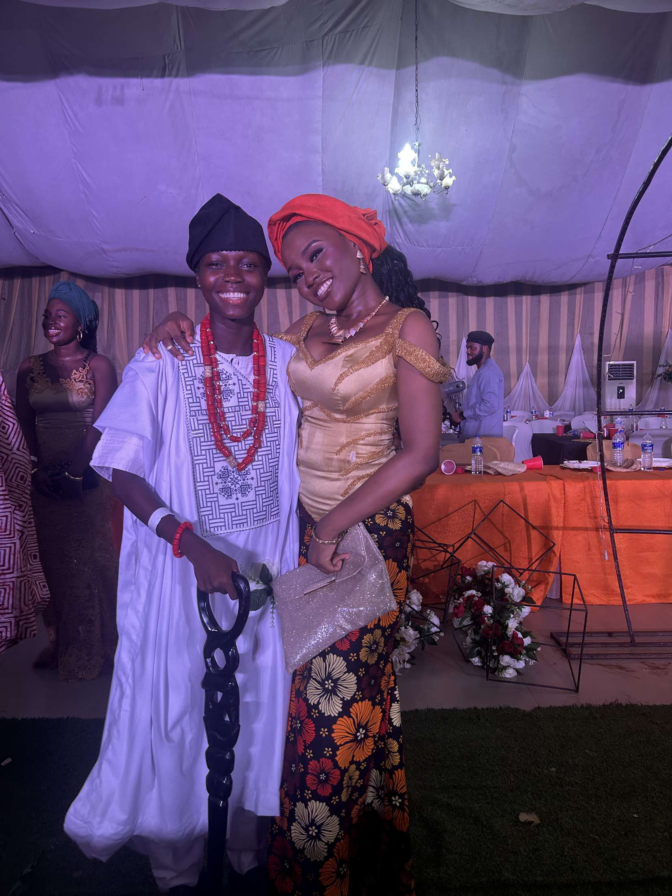

Chapter 4
04
The Celebrations
Every laugh, every cheer
✦
thanks for cheering me on the way you do, Nobody celebrates people the way you do — and today it's your turn to be celebrated right back.
The moments so good they deserve to be written down.
▶ video
